Omsetning er den totale verdien av alle varer og tjenester som et selskap selger i løpet av en bestemt periode, målt til salgspris inkludert merverdiavgift. Omsetning er et grunnleggende begrep i regnskap og skatt, og skiller seg fra inntekter ved at den inkluderer MVA og måles til bruttoverdi før fradrag for kostnader.
Definisjon og Grunnleggende Prinsipper
Omsetning defineres som bruttoverdien av alle salg av varer og tjenester som inngår i virksomhetens ordinære drift, inkludert merverdiavgift. Dette er et viktig skille fra driftsinntekter som måles eksklusive MVA.
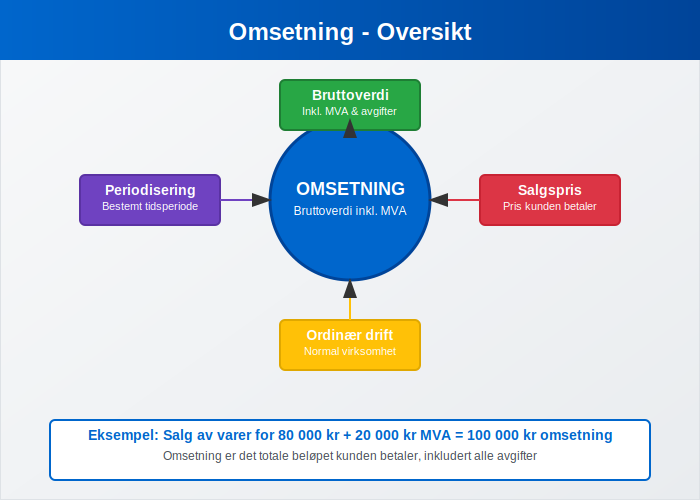
Kjennetegn ved Omsetning:
- Bruttoverdi: Inkluderer merverdiavgift og andre avgifter
- Salgspris: Måles til den pris kunden betaler
- Ordinær drift: Kun salg som er del av normal forretningsvirksomhet
- Periodisering: Måles for en bestemt tidsperiode (måned, kvartal, år)
Forskjellen mellom Omsetning og Inntekt
Det er viktig å forstå forskjellen mellom omsetning og inntekt, da disse begrepene ofte forveksles men har ulike betydninger i regnskapssammenheng.
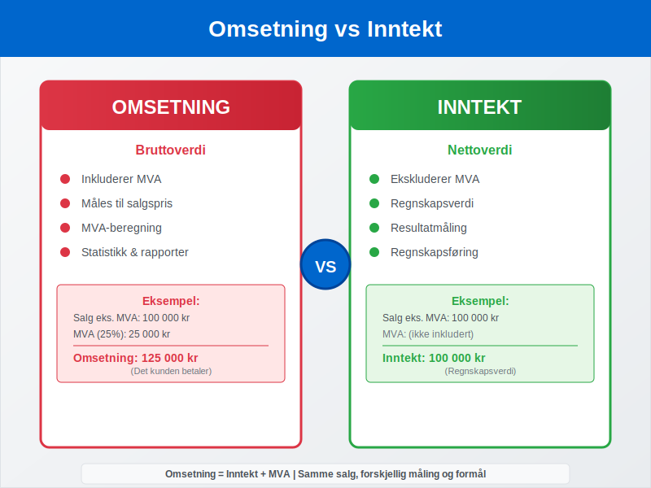
Sammenligning av Omsetning og Inntekt:
| Aspekt | Omsetning | Inntekt |
|---|---|---|
| MVA-behandling | Inkluderer MVA | Ekskluderer MVA |
| Måling | Bruttoverdi | Nettoverdi |
| Formål | MVA-beregning, statistikk | Regnskapsføring, resultatmåling |
| Rapportering | MVA-melding, årsrapport | Resultatregnskap |
| Eksempel | 125 000 kr (inkl. 25% MVA) | 100 000 kr (eks. MVA) |
Praktisk Eksempel:
Salg av varer for 100 000 kr + 25% MVA:
- Omsetning: 125 000 kr (inkl. MVA)
- Inntekt: 100 000 kr (eks. MVA)
- MVA-beløp: 25 000 kr
Beregning av Omsetning
Omsetning beregnes som summen av alle salg i en periode, inkludert merverdiavgift og andre relevante avgifter.
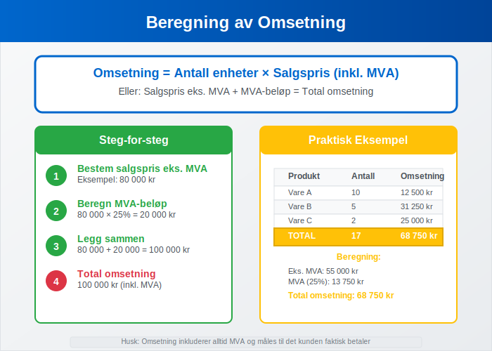
Grunnleggende Formel:
Omsetning = Antall solgte enheter × Salgspris (inkl. MVA)
Detaljert Beregningseksempel:
| Produkt | Antall | Pris eks. MVA | MVA (25%) | Pris inkl. MVA | Omsetning |
|---|---|---|---|---|---|
| Produkt A | 100 | 500 kr | 125 kr | 625 kr | 62 500 kr |
| Produkt B | 50 | 1 000 kr | 250 kr | 1 250 kr | 62 500 kr |
| Produkt C | 25 | 2 000 kr | 500 kr | 2 500 kr | 62 500 kr |
| Total | 175 | - | - | - | 187 500 kr |
Månedlig Omsetningsberegning:
Januar: 150 000 kr
Februar: 175 000 kr
Mars: 200 000 kr
Q1 Total: 525 000 kr
MVA og Omsetningsgrenser
Omsetning er avgjørende for å bestemme MVA-plikt og andre skattemessige forpliktelser.
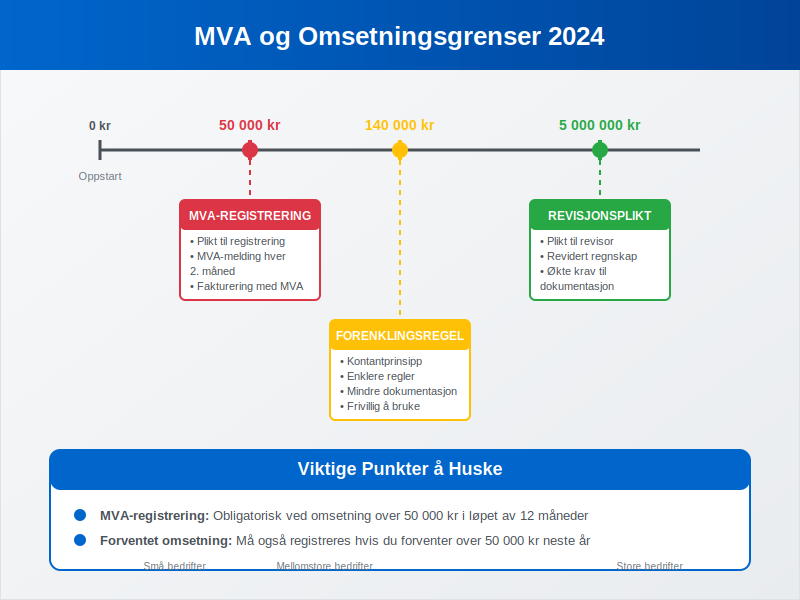
Viktige Omsetningsgrenser i Norge (2024):
| Grense | Beløp | Konsekvens |
|---|---|---|
| MVA-registrering | 50 000 kr | Plikt til MVA-registrering |
| Forenklingsregelen | 140 000 kr | Kan bruke kontantprinsippet |
| Regnskapsplikt | 5 000 000 kr | Plikt til revidert regnskap |
| Bokføringsplikt | Alle med omsetning | Plikt til bokføring |
MVA-registrering og Omsetning:
Når må du registrere deg for MVA?
- Omsetning over 50 000 kr i løpet av 12 måneder
- Forventet omsetning over 50 000 kr neste 12 måneder
- Import av varer for videresalg
Omsetning i Ulike Bransjer
Omsetning måles og rapporteres forskjellig avhengig av bransje og virksomhetstype.
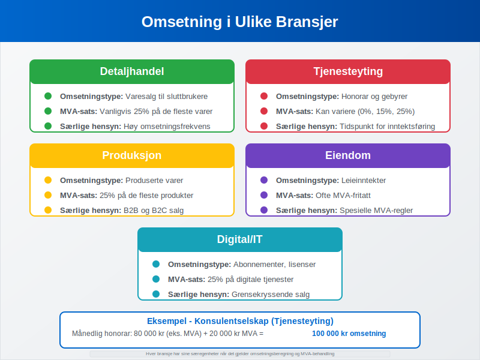
Omsetning etter Bransje:
| Bransje | Omsetningstype | Særlige Hensyn |
|---|---|---|
| Detaljhandel | Varesalg | Inkluderer alle produktsalg (B2C-handel) |
| Tjenesteyting | Honorar og gebyrer | Kan ha ulik MVA-sats |
| Produksjon | Produserte varer | Inkluderer både B2B og B2C |
| Eiendom | Leieinntekter | Kan være MVA-fritatt |
| Digital | Abonnementer, lisenser | Spesielle regler for digitale tjenester |
Eksempel - Konsulentselskap:
Månedlig omsetning:
- Konsulenthonorar: 80 000 kr (eks. MVA)
- MVA (25%): 20 000 kr
- Total omsetning: 100 000 kr
Regnskapsføring og Rapportering av Omsetning
Selv om omsetning inkluderer MVA, må den regnskapsføres korrekt for å skille mellom salgsinntekt og MVA-forpliktelse.

Bokføringseksempel - Varesalg:
Ved salg for 125 000 kr (inkl. 25% MVA):
Debet: Kundefordringer 125 000
Kredit: Salgsinntekter 100 000
Kredit: Utgående MVA 25 000
Ved mottak av betaling:
Debet: Bank 125 000
Kredit: Kundefordringer 125 000
MVA-melding og Omsetning:
I MVA-meldingen rapporteres:
- Omsetning høy sats (25%): Salg med 25% MVA
- Omsetning middels sats (15%): Salg med 15% MVA
- Omsetning lav sats (11,11%): Salg med redusert MVA-sats
- Omsetning fritatt: Salg uten MVA
Omsetningsanalyse og Nøkkeltall
Omsetning brukes til å beregne viktige nøkkeltall for å vurdere virksomhetens prestasjoner og utvikling.
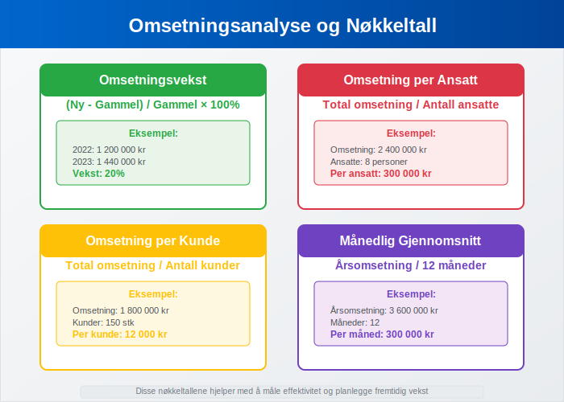
Viktige Omsetningsnøkkeltall:
| Nøkkeltall | Formel | Formål |
|---|---|---|
| Omsetningsvekst | (Ny omsetning - Gammel omsetning) / Gammel omsetning × 100% | Måle vekst |
| Omsetning per ansatt | Total omsetning / Antall ansatte | Produktivitetsmåling |
| Omsetning per kunde | Total omsetning / Antall kunder | Kundeverdimåling (viktig i B2C) |
| Månedlig gjennomsnitt | Årsomsetning / 12 | Planlegging og budsjett |
Eksempel på Omsetningsanalyse:
Årlig utvikling:
- 2022: 1 200 000 kr
- 2023: 1 440 000 kr
- Vekst: (1 440 000 - 1 200 000) / 1 200 000 × 100% = 20%
Omsetning og Skattemessige Konsekvenser
Omsetning påvirker flere skattemessige forhold og forpliktelser for virksomheten.
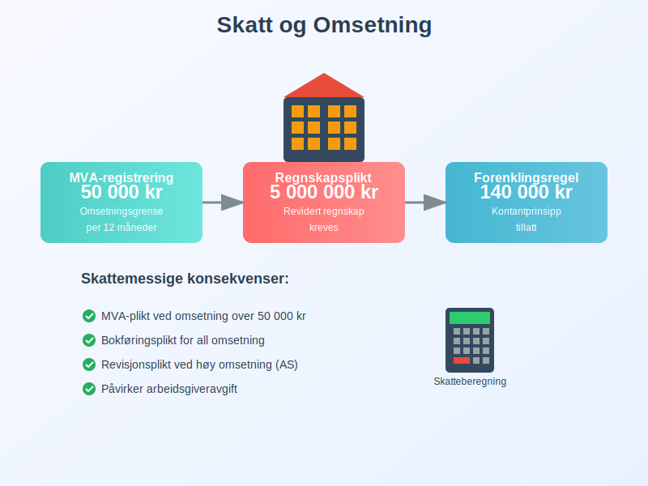
Skattemessige Implikasjoner:
- MVA-plikt: Automatisk ved omsetning over 50 000 kr
- Regnskapsplikt: Påvirker krav til regnskapsføring
- Revisjonsplikt: Ved høy omsetning kreves revisor
- Arbeidsgiveravgift: Påvirkes av virksomhetens størrelse
Omsetning og Selskapsform:
| Selskapsform | Omsetningsgrense | Konsekvens |
|---|---|---|
| Enkeltpersonforetak | Ingen spesielle grenser | Standard MVA-regler |
| Aksjeselskap | 5 mill. kr | Revisjonsplikt |
| Ansvarlig selskap | Varierer | Avhenger av deltakere |
Digitalisering og Omsetningsrapportering
Moderne teknologi har endret hvordan omsetning registreres og rapporteres.
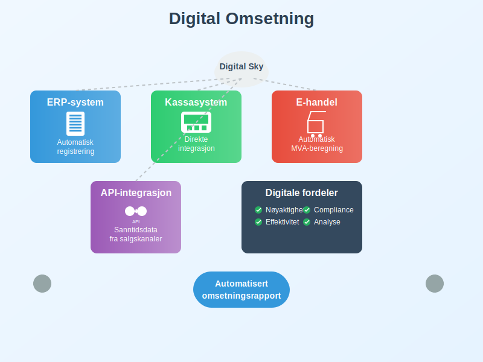
Digitale Løsninger:
- ERP-systemer: Automatisk omsetningsregistrering
- Kassasystemer: Direkteintegrasjon med regnskapssystem (kritisk for B2C-virksomheter)
- E-handel: Automatisk MVA-beregning og rapportering
- API-integrasjoner: Sanntidsdata fra salgskanaler
Fordeler med Digital Omsetningsregistrering:
- Nøyaktighet: Reduserer manuelle feil
- Effektivitet: Automatiserer rutineoppgaver
- Compliance: Sikrer korrekt MVA-rapportering
- Analyse: Bedre innsikt i omsetningsutvikling
Internasjonale Aspekter ved Omsetning
For virksomheter med internasjonal aktivitet gjelder spesielle regler for omsetningsberegning.
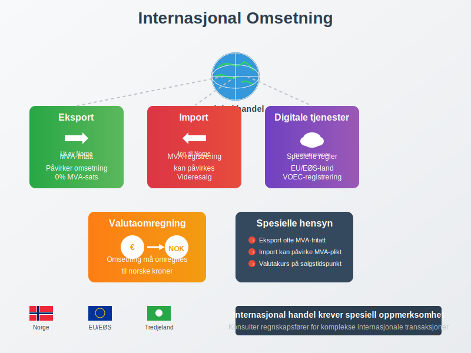
Spesielle Hensyn:
- Eksport: Ofte MVA-fritatt, påvirker omsetningsberegning
- Import: Kan påvirke MVA-registreringsplikt
- Digitale tjenester: Spesielle regler for grensekryssende salg
- Valutaomregning: Omsetning må omregnes til NOK
Praktiske Tips for Omsetningsregistrering
For å sikre korrekt omsetningsregistrering og -rapportering bør virksomheter følge beste praksis.
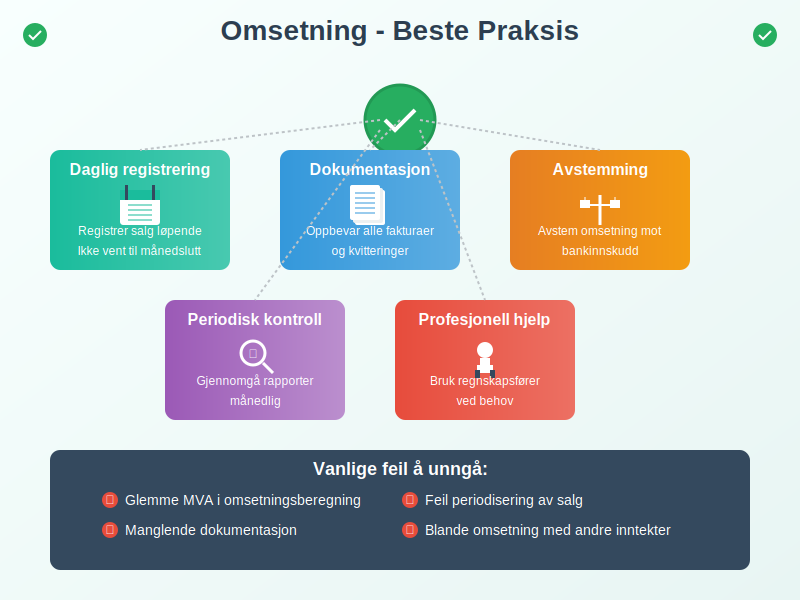
Anbefalinger:
- Daglig registrering: Registrer salg løpende
- Dokumentasjon: Oppbevar alle fakturaer og kvitteringer
- Avstemming: Avstem omsetning mot bankinnskudd
- Periodisk kontroll: Gjennomgå omsetningsrapporter månedlig
- Profesjonell hjelp: Bruk regnskapsfører ved behov
Vanlige Feil å Unngå:
- Glemme MVA: Ikke inkludere MVA i omsetningsberegning
- Feil periodisering: Føre omsetning i feil periode
- Manglende dokumentasjon: Ikke oppbevare salgsbilag
- Feil klassifisering: Blande omsetning med andre inntekter
Omsetning og Fremtidige Trender
Omsetningsbegrepet utvikler seg med nye forretningsmodeller og teknologi.
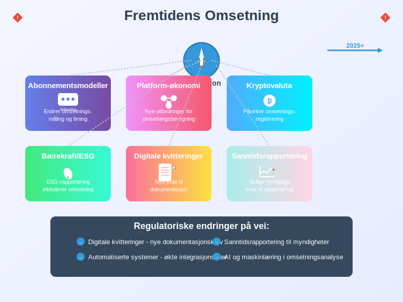
Nye Trender:
- Abonnementsmodeller: Endrer hvordan omsetning måles
- Platform-økonomi: Nye utfordringer for omsetningsberegning
- Kryptovaluta: Påvirker omsetningsregistrering
- Bærekraft: ESG-rapportering inkluderer omsetningsdata
Regulatoriske Endringer:
- Digitale kvitteringer: Nye krav til dokumentasjon
- Sanntidsrapportering: Mulige fremtidige krav
- Automatiserte systemer: Økte krav til systemintegrasjon
Konklusjon
Omsetning er et fundamentalt begrep i norsk regnskap og skatt som påvirker alt fra MVA-registrering til regnskapsplikt. Ved å forstå forskjellen mellom omsetning og inntekt, korrekt beregning og rapportering, kan virksomheter sikre compliance og få bedre innsikt i sin økonomiske utvikling.
For virksomheter er det viktig å ha gode systemer for omsetningsregistrering og å forstå de skattemessige konsekvensene av ulike omsetningsnivåer. Med riktig kunnskap og verktøy blir omsetningsadministrasjon en verdifull del av virksomhetsstyringen.